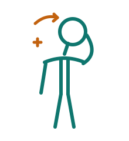
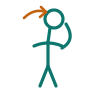
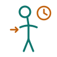

◆
Tageslicht
Tageslicht-Routine
Regelmäßig morgens rausgehen und Tageslicht bewusst einplanen.
Dein Wohlbefinden diese Woche
berechnet aus deinen 3 Werten
Stimmung
letzte Woche 3,6
Energie
letzte Woche 3,7
Stress
letzte Woche 3,0 · niedriger ist besser
Schlaf
letzte Woche 6,2 h (+0,6)
Persönliche Orientierung
3 Marker außerhalb des Orientierungsbereichs.
Dein Check-in wartet
Wie fühlst du dich heute? Dauert unter einer Minute.
Deine Energie hängt diese Woche klar an kurzen Nächten (Ø 6,5 h). 30 Minuten früher ins Bett bringt am meisten.
3× Nackenschmerzen gemeldet. Deine Mobilitäts-Übung zeigt Wirkung — dranbleiben.
Stress ist diese Woche dein schwächster Wert. An angespannten Tagen hilft eine kurze Atem-Balance.
Ein Fokus, der jetzt am meisten bringt.
5 Tage in Folge
Noch 2 Tage bis zum 7-Tage-Kompass.
aus Check-in „Nackenschmerzen“
aus Check-in „schlechter Schlaf“
aus Check-in „hoher Stress“
aus Check-in „Rückenschmerzen“
Vier kurze Übungen, die Verspannungen im Nacken- und Schulterbereich lösen und die Beweglichkeit verbessern — ideal für zwischendurch im Büro oder Werk.
Teil einer Quest
Mobilitätsstarter
Fortschritt: 1 von 3 Übungen
6 → 3
Schmerz ↓
2/5
Aufwand
+5
Punkte
Demo-Werte — Vorher/Nachher wird lokal erfasst und nicht gespeichert.
Nacken-Mobilität · Übung 1 von 5

Diese Übung hilft, Verspannungen im Nacken zu lösen, die durch langes Sitzen am Bildschirm entstehen.
1 · Aufrecht hinsetzen oder hinstellen, Schultern bewusst senken.

2 · Kopf langsam zur Seite neigen, bis eine sanfte Dehnung spürbar ist.

3 · 30 Sekunden halten, dann die Seite wechseln.
1
Satz von 3
30 s
Halten
0:30
Timer
Bei akuten Nackenschmerzen oder Schwindel die Übung abbrechen.
Freiwillig hinterlegte Laborwerte, verständlich erklärt und mit Präventionsroutinen verknüpft.
Deine Laborwerte sind nur für dich sichtbar. Arbeitgeber sehen keine individuellen Gesundheitsdaten.
Referenzbereiche können je Labor, Alter, Geschlecht und Kontext variieren. Diese Ansicht ersetzt keine ärztliche Diagnose oder Behandlung.
Wichtig zur Einordnung
Diese Ansicht erklärt freiwillig hinterlegte Werte zur persönlichen Orientierung. Referenzbereiche können variieren und die Einordnung hängt vom Gesamtbild ab. Sie ersetzt keine ärztliche Diagnose oder Behandlung.
🔒 Arbeitgeber sehen keine individuellen Laborwerte.
Kompakte Übersicht mit Orientierungsbereichen. Orientierungsbereich ist grün markiert, dein Wert als Punkt.
Kleine präventive Routinen für die kommende Woche.
Regelmäßig morgens rausgehen und Tageslicht bewusst einplanen.
Eine möglichst unverarbeitete Mahlzeit als stabile Routine einbauen.
Eisenquellen mit Vitamin-C-reichen Lebensmitteln kombinieren.
Auffällige oder wiederholt abweichende Werte beim nächsten Termin besprechen.
Aus deinem ELYO-Maßnahmen-Hub, passend zu deinen Routinen.
Tageslicht- und Ernährungsimpulse für einen stabilen Vitamin-D-Spiegel.
Eisenreiche Mahlzeiten clever mit Vitamin C kombinieren.
Sanfte Routinen und Schonmodus, wenn Werte über dem Bereich liegen.
Leichte Einheiten, die den Körper nicht zusätzlich fordern.
Letzte 14 Tage · Trend wählen, Tag anklicken für alle Details
Deine Routinen, Serien und Meilensteine an einem Ort.
DEINE SERIE
Noch 2 Tage bis zum 7-Tage-Kompass.
Tippe auf eine Sammlung, um zu sehen, wofür sie steht.
Kurzumfrage zu Teamklima, Belastung und Fokus.
Kurzumfrage zu Teamklima, Belastung und Fokus.
Screening, Basisdaten und Dokumente für deine persönliche Orientierung.
Diese Angaben bleiben getrennt vom neuen Screening-Bogen und können weiter gepflegt werden.
Lade zusätzliche medizinische Dokumente hoch. Uploads können Punkte bringen.